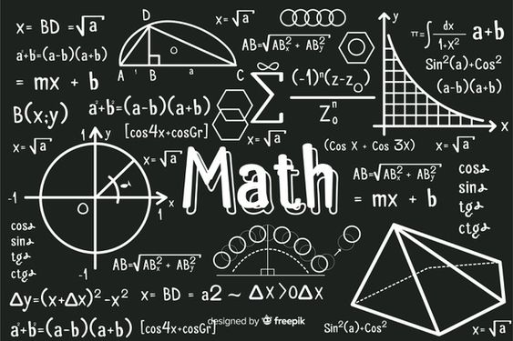

MCQ Questions And Answers
Maths MCQ
Mathematics is an area of knowledge that includes the study of such topics as numbers, formulas and related structures, shapes and spaces in which they are contained, and quantities and their changes. There is no general consensus about its exact scope or epistemological status.
Science MCQ
Science is a systematic enterprise that builds and organizes knowledge in the form of testable explanations and predictions about the universe. The earliest roots of science can be traced to Ancient Egypt and Mesopotamia in around 3000 to 1200 BCE./p>
Social MCQ
In the United States education system, social studies is the integrated study of multiple fields of social science and the humanities, including history, geography, and political science.